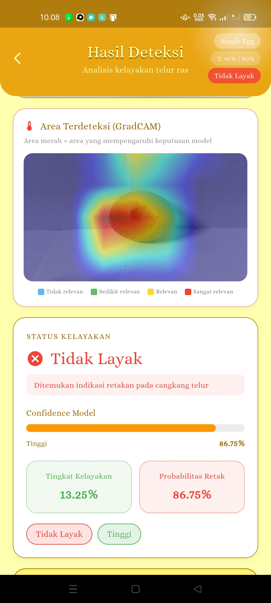

Egg Crack Detection
Mobile Application for Egg Quality Detection
Machine Learning
Thesis · 2026

Overview
An end-to-end application that combines computer vision and machine learning with a mobile interface to detect whether an egg is normal or cracked.
My Role
Full-stack & machine learning developer — worked across the ML pipeline, mobile application development, and system integration.
Tech Stack
Flutter
Dart
Python
TensorFlow
MobileNetV2
OpenCV
Features
- Egg detection (normal / cracked)
- Camera capture input
- Gallery image selection
- Multi-image detection
Outcome
- CNN model integrated into a Flutter mobile app
- End-to-end workflow from image to result
- Combined ML and mobile development in one system